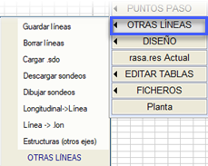
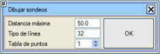
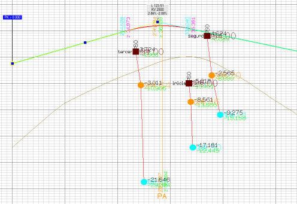
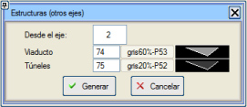

| |
|
KIRMIZI KOT: DİĞER ÇİZGİLER
|
Bu menü aracılığıyla, Kırmızı Kot menüsündeki çizgi düzenleyiciyi kullanarak çizgiler çizebiliriz. Bu çizgiler Çizgileri Kaydet komutuyla kaydedilmelidir. Çizildikten sonra, kullandığımız potada Diğer Çizgileri Çiz kutucuğunu etkinleştirerek boykesitte çizebilmek için .vol dosyasını kaydedebiliriz. Çizgileri Sil komutuyla, daha önce Çizgileri Kaydet komutuyla kaydettiğimiz tüm çizgileri sileriz. Belirli bir çizgiyi silmek için, bu simgeye tıklayarak harita düzenleyiciye gidebilir ve böylece seçilen çizgileri silebiliriz. .sdo Yükle komutu, Topografya menüsünden önceden tanımlanmış bir sondaj dosyasını yüklemeyi sağlar. Sondajları Çiz seçeneği, daha önce bir sondaj dosyasının yüklenmiş olmasını gerektirir. Bu komut, daha sonra bir boykesitte gösterilebilmeleri için sondajları çizer. Nokta Tablosuna sondajların ve Diğer Çizgilerin verilerini ekler ve bunun için aşağıdaki bilgileri belirtmemiz gereken bir iletişim kutusu belirir:

Boykesit->Çizgi: Bu araç, arazi boykesitinin bir kopyasını, Kırmızı Kotlar ekranında düzenlenebilir bir çizgiye aktarır. Çizgi->.lon: Bu araç, düzenlenen çizgiyi bir .lon dosyasına kaydetmeyi sağlar. Yapılar (diğer eksenler): Bu araçla, bir eksenin yapıları mevcut eksen üzerine yansıtılır ve diğer çizgiler olarak gösterilir. Bu çizgiler mevcut eksende (.vol) kaydedilebilir ve boykesitlerle birlikte çizilebilir. |